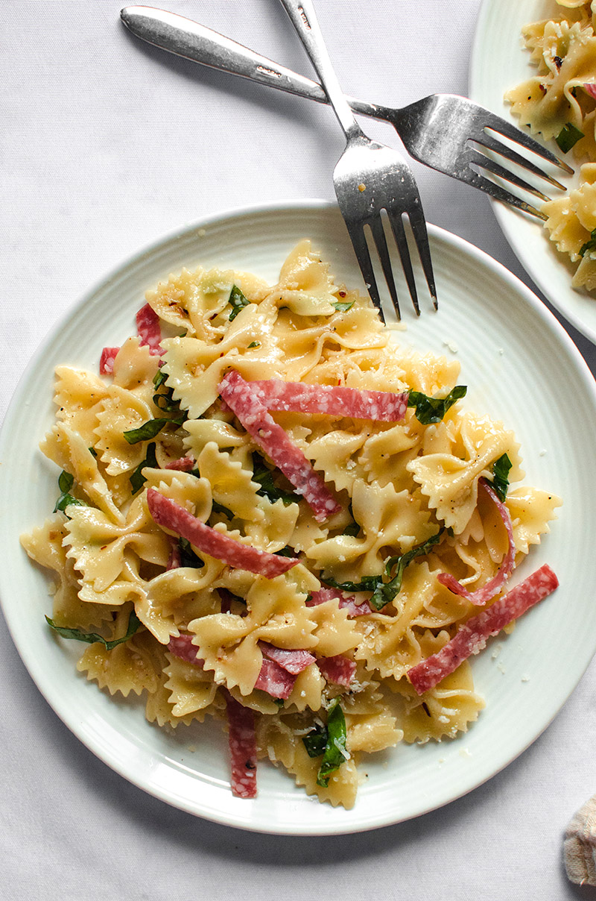

Garlic Farfalle Pasta

Farfalle pasta with olive oil garlic dressing
A blend of mild herbs and strong garlic flavour give this dish a satysfing comfort food feel.
Ingredients
- Farfalle Pasta
- Olive oil
- Garlic fresh/paste/powdered
- Sundried tomatoes
- Spinach
- Lemon juice
- Salt N' Peppa
- In the house
Steps:....
- Bring pot of water to boil, add pasta, add salt, cook for 10-11 minutes for Al Dante
- Begin heating olive oil and and garlic in a saucepan
- After pasta is cooked to preference strain with cold water and set aside
- Finish sauce by adding sundried tomatoes and searing to a soft wilt
- Add salt, pepper and lemon juice to taste
- Plate and enjoy!